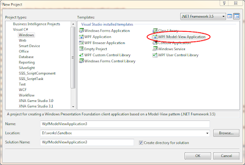
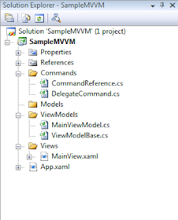
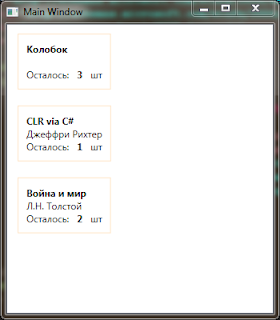
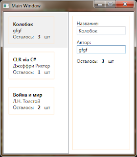
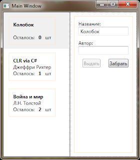

Тема, конечно, неоднократно поднятая, но я все равно напишу шпаргалку на тот случай, если вдруг когда-нибудь забуду. А то с WCSF тоже вроде разобралась, а прошло два месяца со сдачи проекта, и уже ничего и не помню...
Сразу предупрежу, что статья предназначена для того, чтобы быстро въехать в MVVM или быстро его вспомнить. Так что описание будет предельно краткое и схематичное.
Уважаемые коллеги! Эта статья написана в 2010 году. Я примерно с 2011 пишу только на Java под андроид и не помню про WPF ничего. Что-либо у меня спрашивать — бесполезно. Извините
Итак, MVVM. Расшифровывается как Model-View-ViewModel. Рассмотрим на примере.
Пример
Для начала отмечу, что для упрощения нашей жизни с данным паттерном добрые люди разрабатывают MVVM Toolkit, включающий шаблон для Visual Studio:
Для данного проекта сразу создается следующая структура файлов:

Задача
Возьмем какую-нибудь каноничную задачу. Например, отображение списка книг читального зала. У книги есть:
Ну и хватит пока. Добавим немного интерактивности. Пусть к нам ходят читатели и то и дело берут книги почитать или возвращают их обратно. А нам надо в любой момент знать, сколько экземпляров той или иной книги у нас осталось и можем ли мы ее выдать.
На примере такой незатейливой задачи мы и рассмотрим MVVM
Model
Как несложно догадаться, Model — это сущности системы. У нас модель будет состоять из одного простого класса:
Book.cs
class Book
{
public string Title { get; set; }
public string Author { get; set; }
public int Count { get; set; }
public Book(string title, string author, int count)
{
this.Title = title;
this.Author = author;
this.Count = count;
}
}
ViewModel
ViewModel — это, пожалуй, ключевой момент всей этой истории. Это такие специальные классы, которые:
В учетом датабиндинга в WPF всё это дает замечательный результат: в C#-коде формы становится совсем не надо ничего писать. Впрочем, обо все по порядку. Напишем ViewModel для нашей модели:
Book.cs
class BookViewModel : ViewModelBase
{
public Book Book;
public BookViewModel(Book book)
{
this.Book = book;
}
public string Title
{
get { return Book.Title; }
set
{
Book.Title = value;
OnPropertyChanged("Title");
}
}
public string Author
{
get { return Book.Author; }
set
{
Book.Author = value;
OnPropertyChanged("Author");
}
}
public int Count
{
get { return Book.Count; }
set
{
Book.Count = value;
OnPropertyChanged("Count");
}
}
}
BookViewModel унаследован от класса ViewModelBase, который заботливо сгенерил нам MVVM Toolkit. ViewModelBase же, в свою очередь, реализует интерфейс INotifyPropertyChanged и содержит функцию OnPropertyChanged. Все это нужно для того, чтобы всегда можно было вызвать событие "изменилось такое-то поле". Как видно в коде, при любом изменении поля мы такое событие вызываем и передаем в качестве параметра его название. Потом на форме биндинг может это событие обработать и, как следствие, интерфейс и ViewModel всегда будут друг с другом синхронизированы. Впрочем, это я опять забегаю вперед.
Помимо BookViewModel у нас есть еще класс MainViewModel, уже сгенерированный и даже связанный с формой. Добавим в него поле:
ObservableCollection<BookViewModel> BooksList { get; set; }
ObservableCollection — это такая специальная коллекция, которая умеет отслеживать изменения в себе. Также слегка изменим конструктор:
public MainViewModel(List<Book> books)
{
BooksList = new ObservableCollection<BookViewModel>(books.Select(b => new BookViewModel(b)));
}
View
Это и есть наше окно, либо User Control. У любого FrameworkElement-а WPF есть такое поле DataContext. DataContext может быть любым object-ом, иметь какие угодно поля, а его главная задача — являться источником данных для Databinding-а. Форма у нас всего одна, DataContext для нее заполняется в методе OnStartup, что в App.xaml.cs. Немного модифицируем то, что сделал нам MVVM Toolkit, получится следующее:
App.xaml.cs
private void OnStartup(object sender, StartupEventArgs e)
{
List<Book> books = new List<Book>()
{
new Book("Колобок", null, 3),
new Book("CLR via C#", "Джеффри Рихтер", 1),
new Book("Война и мир", "Л.Н. Толстой", 2)
};
MainView view = new MainView(); // создали View
MainViewModel viewModel = new ViewModels.MainViewModel(books); // Создали ViewModel
view.DataContext = viewModel; // положили ViewModel во View в качестве DataContext
view.Show();
}
Осталось написать XAML-код формы. Он прост и незатейлив:
MainView.xaml
<Window x:Class="SampleMVVM.Views.MainView"
xmlns="http://schemas.microsoft.com/winfx/2006/xaml/presentation"
xmlns:x="http://schemas.microsoft.com/winfx/2006/xaml"
xmlns:c="clr-namespace:SampleMVVM.Commands"
Title="Main Window" Height="400" Width="800">
<ListView ItemsSource="{Binding BooksList}">
<ListView.ItemTemplate>
<DataTemplate>
<Border BorderBrush="Bisque" BorderThickness="1" Margin="10">
<StackPanel Margin="10">
<TextBlock Text="{Binding Title}" FontWeight="Bold"/>
<TextBlock Text="{Binding Author}" />
<StackPanel Orientation="Horizontal">
<TextBlock Text="Осталось:" />
<TextBlock Text="{Binding Count}" FontWeight="Bold" Margin="10,0"/>
<TextBlock Text="шт" />
</StackPanel>
</StackPanel>
</Border>
</DataTemplate>
</ListView.ItemTemplate>
</ListView>
</Window>
Обратите внимание на конструкцию Binding в разметке формы. Именно таким образом можно привязывать поля объекта, находящегося в DataContext-е, к атрибутам контролов. Мы не написали ни строчки кода, но тем не менее при запуске получим следующее:

Редактирование
Сделаем так, что для выделенной в списке книги будет открываться редактор. Изменим XAML-разметку формы:
MainView.xaml
<Window x:Class="SampleMVVM.Views.MainView"
xmlns="http://schemas.microsoft.com/winfx/2006/xaml/presentation"
xmlns:x="http://schemas.microsoft.com/winfx/2006/xaml"
xmlns:c="clr-namespace:SampleMVVM.Commands"
Title="Main Window" Height="400" Width="350">
<Grid>
<Grid.ColumnDefinitions>
<ColumnDefinition />
<ColumnDefinition />
</Grid.ColumnDefinitions>
<ListView ItemsSource="{Binding BooksList}" IsSynchronizedWithCurrentItem="True">
<ListView.ItemTemplate>
<DataTemplate>
<Border BorderBrush="Bisque" BorderThickness="1" Margin="10">
<StackPanel Margin="10">
<TextBlock Text="{Binding Title}" FontWeight="Bold"/>
<TextBlock Text="{Binding Author}" />
<StackPanel Orientation="Horizontal">
<TextBlock Text="Осталось:" />
<TextBlock Text="{Binding Count}" FontWeight="Bold" Margin="10,0"/>
<TextBlock Text="шт" />
</StackPanel>
</StackPanel>
</Border>
</DataTemplate>
</ListView.ItemTemplate>
</ListView>
<ContentControl Grid.Column="1" Content="{Binding BooksList}">
<ContentControl.ContentTemplate>
<DataTemplate>
<Border BorderBrush="Bisque" BorderThickness="1" Margin="10">
<StackPanel Margin="10">
<TextBlock Text="Название:"/>
<TextBox Text="{Binding Title, UpdateSourceTrigger=PropertyChanged}" Margin="0,0,0,10"/>
<TextBlock Text="Автор:"/>
<TextBox Text="{Binding Author, UpdateSourceTrigger=PropertyChanged}" Margin="0,0,0,10"/>
</StackPanel>
</Border>
</DataTemplate>
</ContentControl.ContentTemplate>
</ContentControl> </Grid>
</Window>
Стоит обратить внимание на конструкцию UpdateSourceTrigger=PropertyChanged в строке биндинга. Это значит, что любое изменение, производимое в данном поле, будет немедленно отражаться на источнике. Это легко увидеть:

Если этого не написать, источник будет обновляться только по окончании редактирования (т.е. когда контрол будет терять фокус). Это может привести к следующей ошибке интерфейса: когда жмешь "Сохранить", сохраняется все, кроме только что измененного поля.
Команды
Добавим в приложение функциональности. Пусть некие читатели берут книги и возвращают. Соответственно, сделаем две кнопки — «Выдать» и «Забрать—, меняющие количество имеющихся в наличии книг. Если книг не осталось (Count = 0), кнопка «Выдать» должна дизаблиться.
В MVVM не пишутся обработчики событий. Функции, которые нужно выполнять контролам, пишутся во ViewModel и биндятся к контролам точно так же, как поля. Только используется механизм команд.
Команда должна представлять из себя экземпляр класса, реализующего интерфейс ICommand. К счастью, MVVM Toolkit снова нам помог и сгенерил целых два таких класса — DelegateCommand для реализации команды без параметров и DelegateCommand<T> — для реализации команды с параметром типа T.
Мы параметры передавать не будем. Код во ViewModel будет таков:
BookViewModel.cs
#region Забрать
private DelegateCommand getItemCommand;
public ICommand GetItemCommand
{
get
{
if (getItemCommand == null)
{
getItemCommand = new DelegateCommand(GetItem);
}
return getItemCommand;
}
}
private void GetItem()
{
Count++;
}
#endregion
#region Выдать
private DelegateCommand giveItemCommand;
public ICommand GiveItemCommand
{
get
{
if (giveItemCommand == null)
{
giveItemCommand = new DelegateCommand(GiveItem, CanGiveItem);
}
return giveItemCommand;
}
}
private void GiveItem()
{
Count--;
}
private bool CanGiveItem()
{
return Count > 0;
}
#endregion
Обратите внимание, что этот код добавляется в BookViewModel, а не в MainViewMode. Дело в том, что мы будем добавлять кнопки в ContentControl, DataContext-ом которого является именно BookViewModel.
С первой командой все ясно. Создали команду, и в назначили ей в качестве действия метод GetItem, который и будет вызываться при ее активации. Со второй немного интереснее, но тоже просто. Помимо того, что она выполняет некоторое действие, она еще и может проверять с помощью метода CanGiveItem(), может она выполняться или нет.
В XAML-разметку нашей формы добавим следующее
MainView.xaml
<ContentControl Grid.Column="1" Content="{Binding BooksList}">
<ContentControl.ContentTemplate>
<DataTemplate>
<Border BorderBrush="Bisque" BorderThickness="1" Margin="10">
<StackPanel Margin="10">
<TextBlock Text="Название:"/>
<TextBox Text="{Binding Title, UpdateSourceTrigger=PropertyChanged}" Margin="0,0,0,10"/>
<TextBlock Text="Автор:"/>
<TextBox Text="{Binding Author, UpdateSourceTrigger=PropertyChanged}" Margin="0,0,0,10"/>
<StackPanel Orientation="Horizontal">
<Button Content="Выдать" Command="{Binding GiveItemCommand}" Margin="10,0" />
<Button Content="Забрать" Command="{Binding GetItemCommand}" Margin="10,0" />
</StackPanel> </StackPanel>
</Border>
</DataTemplate>
</ContentControl.ContentTemplate>
</ContentControl>
Вот и все. Мы получили требуемую функциональность. Количество экземпляров книги увеличивается и уменьшается, а когда их становится 0, кнопка «Выдать» дизаблится (благодаря упомянутому CanGiveItem).

Итого
В приведенном приложении все данные и реализация логики вынесены в отдельное место. В C#-коде формы мы не добавили ни строчки. XAML понятен и прекрасен. Благодаря паттерну MVVM в коде легко разобраться и легко сопровождать.